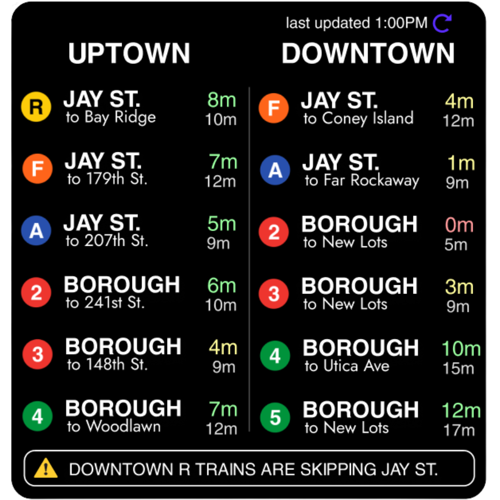
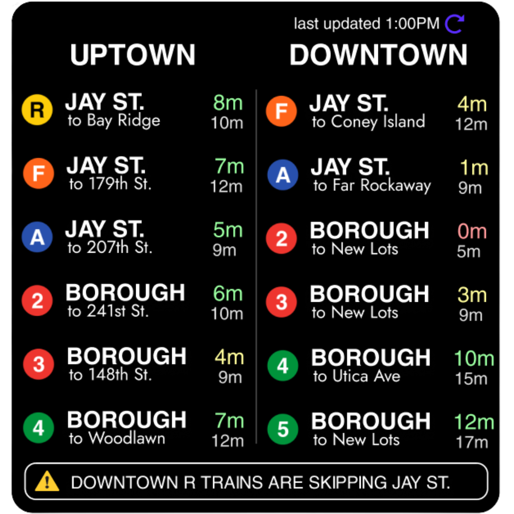

Ideation
The original idea began as a full redesign of the MTA app. However, user and stakeholder feedback guided a more focused direction: creating a standalone widget that would serve users based on their geographic location and deliver critical, glanceable transit data.
Research and Visualization
Before designing, two important aspects needed to occur: application research and rider research.
Application Research
I conducted a competitive review of apps including Train Time, Railway, Subway, Citymapper, and MTA’s native app. This revealed common pain points such as inconsistent accessibility info and poor live-update performance. These insights helped shape survey questions and functional priorities.
Rider Research
I surveyed 14 colleged-aged NYC transit riders students to understand their feedback regarding app usage, accessibility needs, and transit completion. The survey gave the following insights:
- Specific asks from the survey: In the bottom section of the survey, a lot of people said that a main improvement they want from transit apps were more accurate times/service updates; Someone mentioned seeing possible transfer trains/buses would be arriving at the station, clearer lists of where the next closest stations are as well as their next train arrival time, seeing specific station with the times more easily, a widget, updated formats, etc.
- 69.2% were not aware of the next ADA compliant station or station that has an elevator via an app, and 76.9% were not aware of its location via an app
- Most people had a agreeable response to knowing only specific local stations, while an overwhelming majority would want to be aware of local train stations and time around their destination.
- Most people are comfortable not using a transit app for some to all travel
Participants also provided a list of transit applications they have used to navigate NYC transit.
Design
Over three iterations, I devloped a widget UI emphasizing accessibility, immediacy, and customization.
- Colors indicating how close each train is (5+ minutes away being green, 4-2 minutes away being yellow, and 1-0 minutes away being red)
- The final stop on each train added as some train routes are dependent on the final stop which is not always the same station
- Showcasing the time of the following train afterwards and not only the next train.
- A section dedicated for any service updates, rerouting, etc.
 
